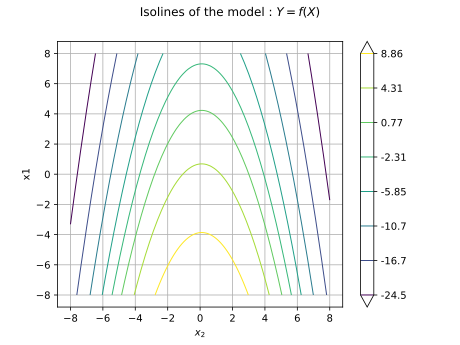
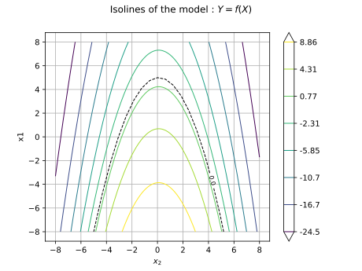
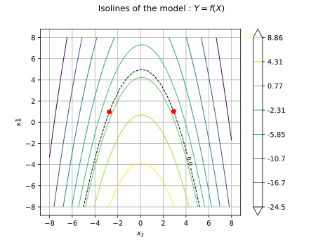

Note
Go to the end to download the full example code.
Use the FORM algorithm in case of several design points¶
Abstract¶
In this example we showcase the MultiFORM class which can perform a FORM analysis with several
design points.
import openturns as ot
import openturns.viewer as otv
We consider a standard bivariate Gaussian random vector ![X = (X_1, X_2)]() :
:
We can draw the bidimensional PDF of the distribution dist over ![[-5,5] \times [-5,5]]() :
:
ot.ResourceMap.SetAsUnsignedInteger("Contour-DefaultLevelsNumber", 8)
graphPDF = dist.drawPDF([-5, -5], [5, 5])
graphPDF.setTitle(r"2D-PDF of the input variables $(X_1, X_2)$")
graphPDF.setXTitle(r"$x_1$")
graphPDF.setYTitle(r"$x_2$")
graphPDF.setLegendPosition("lower right")
view = otv.View(graphPDF, contour_kw={"norm": "log"})

We then define a model ![f]() which maps a 2D-vector X = (X_1,X_2) to a
scalar output Y = f(X).
which maps a 2D-vector X = (X_1,X_2) to a
scalar output Y = f(X).
f = ot.SymbolicFunction(["x0", "x1"], ["5.0-x1-0.5*(x0-0.1)^2"])
graphModel = f.draw([-8.0, -8.0], [8.0, 8.0])
graphModel.setXTitle(r"$x_1$")
graphModel.setXTitle(r"$x_2$")
graphModel.setTitle(r"Isolines of the model : $Y = f(X)$")
view = otv.View(graphModel)

We create random vectors for the input and output variables:
X = ot.RandomVector(dist)
Y = ot.CompositeRandomVector(f, X)
The failure domain ![\mathcal{D}]() is
is ![\mathcal{D} = \{ x=(x_1, x_2) \in \mathbb{R}^2 / f(x) < 0 \}]()
failureEvent = ot.ThresholdEvent(Y, ot.Less(), 0.0)
We shall represent the failure domain event using a Contour object.
nx, ny = 25, 25
xx = ot.Box([nx], ot.Interval([-8.0], [8.0])).generate()
yy = ot.Box([ny], ot.Interval([-8.0], [8.0])).generate()
inputData = ot.Box([nx, ny], ot.Interval([-8.0, -8.0], [8.0, 8.0])).generate()
outputData = f(inputData)
mycontour = ot.Contour(xx, yy, outputData)
mycontour.setLevels([0.0])
mycontour.setLabels(["0.0"])
mycontour.setColor("black")
mycontour.setLineStyle("dashed")
graphModel.add(mycontour)
view = otv.View(graphModel)

In the physical space the failure domain boundary is the dashed black curve. We recall that one of
the steps of the FORM method is to find the closest point of the failure domain boundary to the origin.
Here we see that the symmetry of the domain implies that two points exist;
one in the ![x_1 \geq 0]() half-space and the other in the
half-space and the other in the ![x_1 \leq 0]() half-space.
half-space.
We build the MultiFORM algorithm in a similar fashion as the FORM algorithm.
We choose an optimization solver, here the Cobyla solver, and a starting point, the mean of the distribution dist.
We are ready to run the algorithm and store the result in the MultiFORM class:
algo.run()
result = algo.getResult()
We have access to the results with the getFORMResultCollection method which produces a collection of FORMResult:
coll = result.getFORMResultCollection()
The length of this collection is the number of design points:
n_design_pts = len(coll)
print("Number of design points :", n_design_pts)
Number of design points : 2
We have access to the design points with the getPhysicalSpaceDesignPoint method for each element of the collection coll.
designPointPhysicalSpace1 = coll[0].getPhysicalSpaceDesignPoint()
designPointPhysicalSpace2 = coll[1].getPhysicalSpaceDesignPoint()
print(coll[0].getPhysicalSpaceDesignPoint())
print(coll[1].getPhysicalSpaceDesignPoint())
[-2.74084,0.964797]
[2.91584,1.03551]
We visualize them on the previous graph with red circle dots.
cloud = ot.Cloud([designPointPhysicalSpace1[0]], [designPointPhysicalSpace1[1]])
cloud.setColor("red")
cloud.setPointStyle("fcircle")
cloud.setLegend("design point no. 1")
graphModel.add(cloud)
cloud = ot.Cloud([designPointPhysicalSpace2[0]], [designPointPhysicalSpace2[1]])
cloud.setColor("red")
cloud.setPointStyle("fcircle")
cloud.setLegend("design point no. 2")
graphModel.add(cloud)
graphModel.setLegendPosition("")
view = otv.View(graphModel)

We recall that the FORM approximate is based on the substitution of the failure domain by the half-space defined by the tangent at the design point. Here we can clearly see that this would miss half of the information. That is why both design points are needed.
For each design point we have a probability associated to the approximation by the half-space:
pf1 = coll[0].getEventProbability()
pf2 = coll[1].getEventProbability()
The probability of failure is the given by the getEventProbability()
which is the sum of the two previous probabilities pf1 and pf2:
pf = result.getEventProbability()
print("Probability of failure : ", pf)
print(" wrt design point 1 : ", pf1)
print(" wrt design point 2 : ", pf2)
Probability of failure : 0.0028187467000784228
wrt design point 1 : 0.0018322049824846679
wrt design point 2 : 0.0009865417175937059
Display the figures